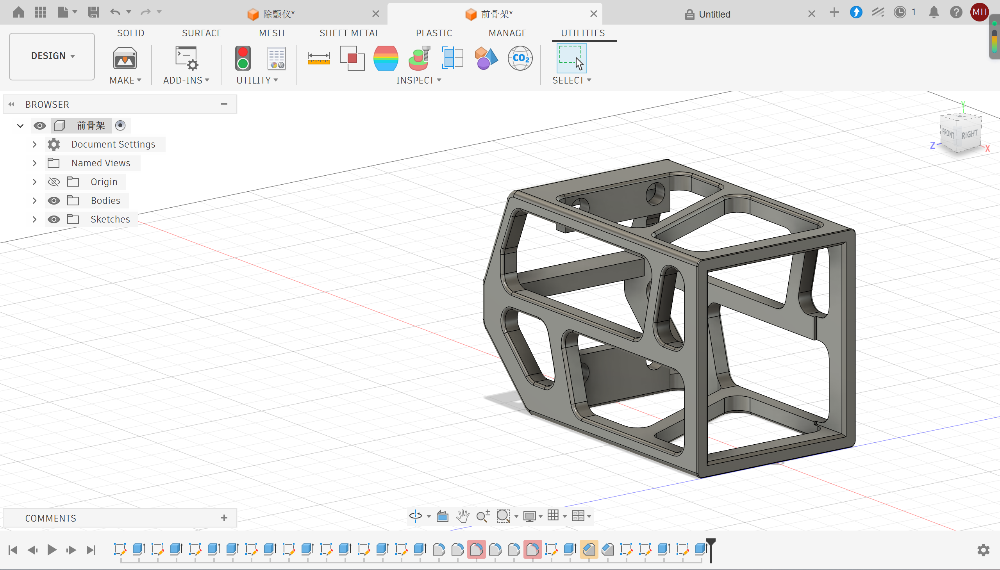

Weekly Lab Notes & Work
MVP: Minimum Viable Product Design
Input device: FSR pressure sensor
Output device: Stepper motor
Function logic: When the detected pressure value is low, the stepper motor rotates a larger angle to lock the spoon and prevent it from falling off; higher pressure corresponds to smaller rotation travel.
Demo video link: Bilibili Demo Video
3D Render of Hand Assembly

This image shows the final 3D schematic of the mechanism placed inside the hand assembly.
Arduino Source Code
#includeconst int FSR_PIN = A1; const int stepPin = D7; const int dirPin = D8; AccelStepper stepper(1, stepPin, dirPin); const int GRIP_MIN = 500; const int GRIP_MAX = 3500; const int STEP_TWO_CIRCLE = 400; const int STEP_MIN = 50; unsigned long timeMark = 0; const unsigned long READ_INTERVAL = 4000; int stage = 0; void setup() { pinMode(FSR_PIN, INPUT); stepper.setMaxSpeed(1200.0); stepper.setAcceleration(300.0); stepper.setCurrentPosition(0); } void loop() { stepper.run(); switch (stage) { case 0: if (millis() - timeMark >= READ_INTERVAL) { timeMark = millis(); int fsrRaw = analogRead(FSR_PIN); int fsrSafe = constrain(fsrRaw, GRIP_MIN, GRIP_MAX); long targetPos = map(fsrSafe, GRIP_MIN, GRIP_MAX, STEP_TWO_CIRCLE, STEP_MIN); stepper.moveTo(targetPos); stage = 1; } break; case 1: if (stepper.distanceToGo() == 0 && millis() - timeMark >= 2000) { timeMark = millis(); stepper.moveTo(0); stage = 2; } break; case 2: if (stepper.distanceToGo() == 0 && millis() - timeMark >= 2000) { timeMark = millis(); stage = 0; } break; } }